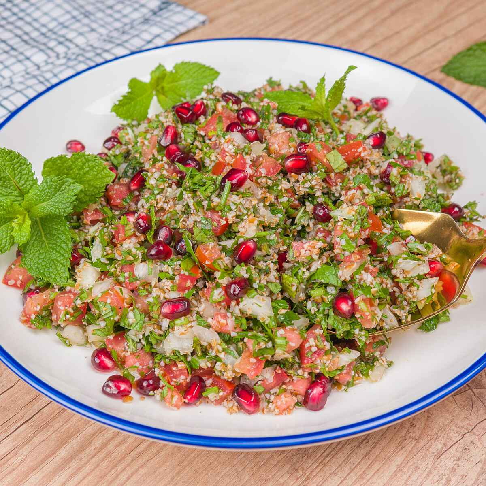
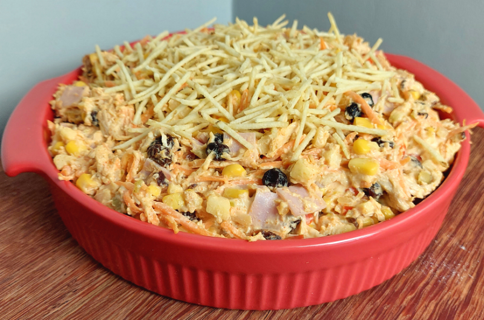

Tabule é um prato libanês de salada, frequentemente degustado como um aperitivo. É feito principalmente de triguilho, tomate, cebola, salsa, hortelã e outras ervas, com suco de limão, pimenta e vários temperos. No Líbano, onde surgiu, é consumido por cima de folhas de alface.
No Brasil, o salpicão é um tipo de salada, conhecido pela mistura de legumes, frutas e carne de ave desfiada e tradicionalmente servido nas ceias de Natal e Ano Novo, em vários estados do país.
